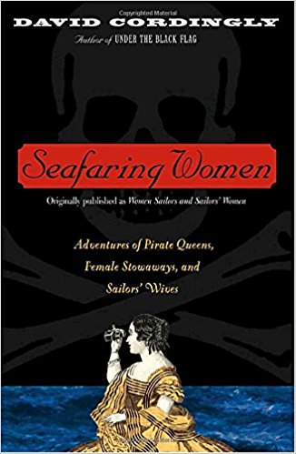
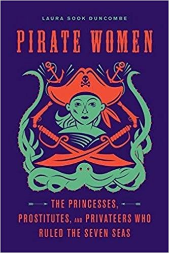

Sources

"For centuries, the sea has been regarded as a male domain, but in this illuminating historical narrative, maritime scholar David Cordingly shows that an astonishing number of women went to sea in the great age of sail. Some traveled as the wives or mistresses of captains; others were smuggled aboard by officers or seamen. And Cordingly has unearthed stories of a number of young women who dressed in men’s clothes and worked alongside sailors for months, sometimes years, without ever revealing their gender. His tremendous research shows that there was indeed a thriving female population from pirates to the sirens of myth and
legends on and around the high seas. A landmark work of women’s history disguised as a spectacularly entertaining yarn, Women Sailors and Sailor’s Women will surprise and delight." from Amazon Book Summary
Seafaring Women: Adventures of Pirate Queens, Female Stowaways, and Sailors' Wives by David Cordingly
"For centuries, the sea has been regarded as a male domain, but in this illuminating historical narrative, maritime scholar David Cordingly shows that an astonishing number of women went to sea in the great age of sail. Some traveled as the wives or mistresses of captains; others were smuggled aboard by officers or seamen. And Cordingly has unearthed stories of a number of young women who dressed in men’s clothes and worked alongside sailors for months, sometimes years, without ever revealing their gender. His tremendous research shows that there was indeed a thriving female population from pirates to the sirens of myth and
legends on and around the high seas. A landmark work of women’s history disguised as a spectacularly entertaining yarn, Women Sailors and Sailor’s Women will surprise and delight." from Amazon Book Summary
Want to learn more? Click the book cover!
Under the Black Flag: The Romance and the Reality of Life Among the Pirates by David Cordingly
"For this rousing, revisionist history, the former head of exhibitions at England's National Maritime Museum has combed original documents & records to produce a most authoritative & definitive account of piracy's Golden Age. As he explodes many accepted myths (i.e. walking the plank is pure fiction), Cordingly replaces them with a truth that is more complex & often bloodier." from Amazon Book Summary
Want to learn more? Click the book cover!

"In the first-ever Seven Seas history of the world’s female buccaneers, Pirate Women: The Princesses, Prostitutes, and Privateers Who Ruled the Seven Seas tells the story of women, both real and legendary, who through the ages sailed alongside—and sometimes in command of—their male counterparts. These women came from all walks of life but had one thing in common: a desire for freedom. History has largely ignored these female swashbucklers, until now. Pirate Women explores why and how these stories are told and passed down, and how history changes depending on who is recording it. It’s the most comprehensive overview of women pirates in one volume and chock-full of swashbuckling adventures that pull these unique women from the shadows into the spotlight that they deserve." from Amazon Book Summary
Pirate Women: The Princesses, Prostitutes, and Privateers Who Ruled the Seven Seas by Laura Sook Duncombe
"In the first-ever Seven Seas history of the world’s female buccaneers, Pirate Women: The Princesses, Prostitutes, and Privateers Who Ruled the Seven Seas tells the story of women, both real and legendary, who through the ages sailed alongside—and sometimes in command of—their male counterparts. These women came from all walks of life but had one thing in common: a desire for freedom. History has largely ignored these female swashbucklers, until now. Pirate Women explores why and how these stories are told and passed down, and how history changes depending on who is recording it. It’s the most comprehensive overview of women pirates in one volume and chock-full of swashbuckling adventures that pull these unique women from the shadows into the spotlight that they deserve." from Amazon Book Summary
Want to learn more? Click the book cover!
Website Sources
History.com
The Way of the Pirates
Bust Magazine
Smithsonian Magazine: Women Pirates
The Most Famous Female PIRATES of All Time: YouTube Video
Britannica
Smithsonian Magazine: Anne Bonny and Mary Read
Ancient Origins: Ching Shih
Atlas Obsura: The Chinese Female Pirate Who Commanded 80,000 Outlaws